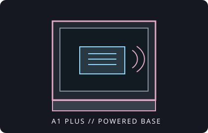

[ IDENTIFIED ENCLOSURE // A1 PLUS ITX CUBE ]
InWin A1 Plus
273 × 224 × 357 mm (H × W × D); Mini-ITX case with integrated Qi charging base and included 650 W 80 Plus Gold PSU.

VARIANT / ARCHIVAL CAVEAT: A1 Plus includes a 650 W PSU and charging base that distinguish it from the earlier A1; verify power-supply revision, wireless charger lead and glass side panel before swapping parts.
Mechanical specifications and fit
| Catalog identity | InWin A1 Plus Mini-ITX chassis, integrated Qi charging base. |
|---|---|
| Dimensions / board | 273 × 224 × 357 mm (H × W × D); Mini-ITX motherboard only. |
| GPU / cooler | GPU up to 320 mm long and roughly 160 mm tall; CPU cooler height up to 160 mm. Check GPU thickness and power-cable bend as well. |
| Radiator / fans | One 120 mm radiator position at the rear; no long radiator support. Multiple bottom/side fan positions are subject to GPU and PSU cable clearance. |
| PSU / bays | Includes 650 W 80 Plus Gold PSU in the A1 Plus configuration. Two 2.5-inch and one 3.5-inch drive position are listed; verify bracket use with the selected GPU and PSU harness. |
| Revision / identification | A1 Plus is a separate model from the A1 and A1 Prime; confirm included power supply and panel/lighting parts by SKU. |
Compatibility notes
The A1 Plus has an integrated PSU with fixed cable lengths; a replacement PSU is not a standard ATX/SFX swap. The 320 mm GPU limit must be cross-checked with the exact card width, cable path and drive bracket. The 120 mm radiator is rear-only; larger water-cooling radiators are not part of the standard supported configuration.
- Preserve the integrated PSU and Qi charging wiring as a matched assembly.
- Measure graphics-card clearance including power connectors and cable bend radius.
- Check drive and fan bracket positions together rather than relying on nominal counts.
Manufacturer specifications and manual
- InWin A1 Plus official product informationManufacturer product family page.
- InWin A1 Plus user manual (PDF)Official manufacturer manual with installation and compatibility information.